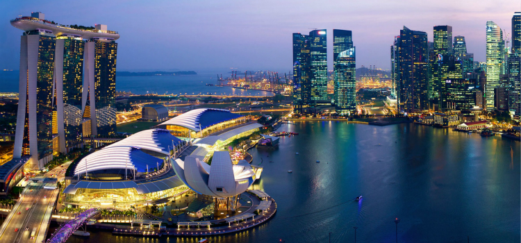
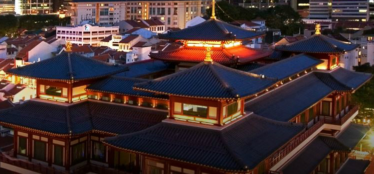

开启美妙的狮城之旅，以下的经典区域一定不能错过。
滨海湾
碧海蓝天与巍然耸立的地标建筑相互辉映，满溢现代感的滨海湾呈现出新加坡繁华时尚的一面。不发挥创意跟狮头鱼尾像摆个新奇的姿势留影都会觉得新加坡之游不完整；新加坡滨海湾花园里除了繁花似锦、擎天树丛的热带园林景观，夜幕降临后的灯光音乐秀满载其独特的活力；每年的跨年倒数活动更带来热闹壮观的烟花汇演；亚洲最大的摩天观景轮和金沙酒店空中花园让你鸟瞰新加坡的怡人景致；滨海湾金沙，一座拥有各类高档娱乐设施的综合度假村；滨海艺术中心和艺术科学博物馆展示出别具一格的文化气息；沂水而建的LOUIS VUITTON水晶宫殿旗舰店和著名夜店Avalon则另有一番新鲜感。

网站：https://www.marina-bay.sg/
前往方式：Marina Bay MRT Station，代号NS27/CE2（南北线及环线，兴建中的汤申－东海岸线）
牛车水
新加坡的唐人街，新旧元素的融合塑造出牛车水不一样的风格。传统品尝正宗的本地美食和体验怀旧街头式用餐的必去之处牛车水美食街；尼路、达士敦路和恭锡路则有新潮美食与特色酒吧；具有悠久历史的宗教文化地标，詹美回教堂（新加坡最古老的回教堂之一），马里安曼兴都庙（新加坡最古老的兴都庙），佛牙寺龙华院带你寻觅逝去年华的古韵；农历新年期间到访，传统灯饰与舞狮表演，在异国也能体验中国特色年。

网站：http://www.chinatown.sg/
前往方式：Chinatown MRT Station，代号NE4/DT19（东北线及滨海市区线）
乌节路
鳞次栉比的商业中心，疯狂血拼的特惠折扣，无论是国际奢侈连锁，还是小众低调的品牌通通都能在这里找到，更是一个畅快吃喝玩乐的购物圣地。新加坡最高的观景台ION Sky，每天的开放时间是下午三点到五点半；国际奢华品牌精品云集ION Orchard 购物中心和百丽宫 (Paragon)；有意于新加坡本地设计时尚的旅客，可以去诗家董 (TANGS) 和乌节门 (orchard gateway)； 11月至1月期间的乌节圣诞大街欢营造出欢快的嘉年华气氛。

网站：http://www.orchardroad.org/
前往方式：Orchard MRT Station，代号NS22/TE14（南北线及兴建中的汤申－东海岸线）
圣淘沙
阳光、海滩和主题乐园，适合亲子游的度假区。圣淘沙名胜世界包括了新加坡环球影城、S.E.A 海洋馆、水上探险乐园、海事博物馆、新加坡特丽爱 3D 美术馆、梦之湖等涵盖各类主题的有趣景点。iFly跳伞体验仓是世界最大的跳伞模拟装置，价格只有户外跳伞的六分之一，想体验零重力翱翔又怕危险的游客的福音。圣淘沙Megazip Adventure Park还可以体验亚洲最极限的绳索挑战。
网站：http://www.sentosa.com.sg/
前往方式：从港湾搭乘缆车/淘沙捷运站(怡丰城L大厅3楼)乘搭圣淘沙捷运
小印度
新加坡最著名的印度人聚集地，令人垂涎三尺的美食和琳琅满目的特色商品洋溢着浓厚的印度风情。24 小时营业的慕达发中心 (Mustafa Centre) 出售商品种类多达30 万种；新加坡最大的室内传统市场竹脚中心 (Tekka Centre)拥有大量印度特色的商品；小印度中心 (Little India Arcade)的装饰品服饰珠宝值得一逛。每年屠妖节 (Deepavali)（通常为 10 月或 11 月）和丰收节 (Pongal)（1 月中旬）更是体验印度文化的好机会。
网站：https://www.littleindia.com.sg/
前往方式：Little India MRT Station，代号NE7/DT12（东北线站及滨海市区线）
勿拉士峇沙—武吉士
位于新加坡市中心的艺术文化遗产区，聚集了一流的博物馆、国家保护级的文化古迹和多所人文艺术机构，例如国家中央图书馆，新加坡国家博物馆和土生文化馆，亚美尼亚教堂，以及新加坡最古老的中央消防局等。新加坡艺术学院、新加坡管理大学、新加坡拉萨尔艺术学院和新加坡南洋艺术学院等也坐落于此地。
每年八月举行的“新加坡仲夏夜空”艺术节期间展馆会延长开放时间，还有各种精彩纷呈的艺术相关活动。
作为新加坡最古老的一个区，熙熙攘攘的古色街道和商铺也值得探寻一番。
网站：http://www.brasbasahbugis.sg/
前往方式： Bugis MRT Station，代号EW12/DT14（东西线和地铁滨海市区线）
校园区
常年雄踞QS亚洲大学排名第一位和第二位的新加坡国立大学和南洋理工大学不仅是举世闻名的高等学府，同时也拥有目酣神醉的秀丽景致，不少亲子游和学生党旅客都会慕名去一睹风采。
新加坡国立大学
网站：https://cn.nus.edu.sg/
地址：21 Lower Kent Ridge Rd, Singapore 119077
南洋理工大学
网址：http://www.ntu.edu.sg/
地址：50 Nanyang Ave, Singapore 639798